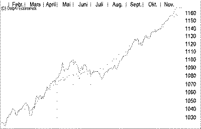
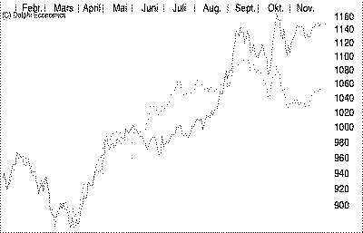
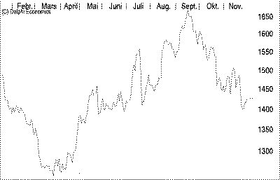

Verdipapirfondsandeler er i de senere årene blitt et ofte benyttet investeringsaltemativ i Norge. Forvaltningen er regulert ved "Lov om verdipapirfond" av 12.06.81. Verdipapirfond og forvaltningen av disse er underlagt en kontinuerlig overvåking fra Kredittilsynet. i tillegg overvåker en depotmottaker - i vårt tilfelle Christiania Bank og Kreditkasse - samtlige transaksjoner inn og ut av fondet. Dette er med på å gi andelseieme en trygghet for disponeringen av deres midler. |
| Verdipapirfondet Trend Obligasjon er et rent obligasjonsfond som investerer i det norske markedet. Trend Obligasjon forvaltes etter en investeringsfilosofi som kjennetegnes ved systematisk vurdering av markedet og analytiske baserte beslutninger. Fondet investerer i de mest likvide obligasjonene, og en varierende andel av investeringene er i statsobligasjoner. Fondet kan ha meget lang durasjon i perioder hvor sannsynligheten for rentefall vurderes som stor. |
 Verdiutviklingen på èn andel i Trend Obligasjon |
| Verdipapirfondet Trend Norge er et rent aksjefond investert i det norske markedet. Det forvaltes etter en investeringsfilosofi som systematisk vurderer det norske aksjemarkedet basert på analyser av makroøkonomier, finansmarkeder, sektorer og enkeltaksjer. I perioder hvor sannsynligheten for nedgang vurderes som stor, vil fondet plasseres så konservativt som mulig - gjerne i kontanter og statsobligasjoner med kort løpetid. |
 Verdiutviklingen på èn andel i Trend Norge |
| Verdipapirfondet Trend International er et internasjonalt kombinasjonsfond som investerer på børser innenfor OECD-området. Fondet har et avkastningsmål på 20-30% pr år. lnvesteringsfilosofien kjennetegnes ved systematisk vurdering av de internasjonale aksjemarkeder som fondet vurderer å investere i - basert på analyser av økonomien, finansmarkeder, sektorer og enkeltaksjer. Plasseringene konsentreres om få bransjer for å få maksimal uttelling. I perioder hvor sannsynligheten for nedgang vurderes som stor, kan også dette fondet gå over i statsobligasjoner og kontanter. |
 Verdiutviklingen på èn andel i Trend International |